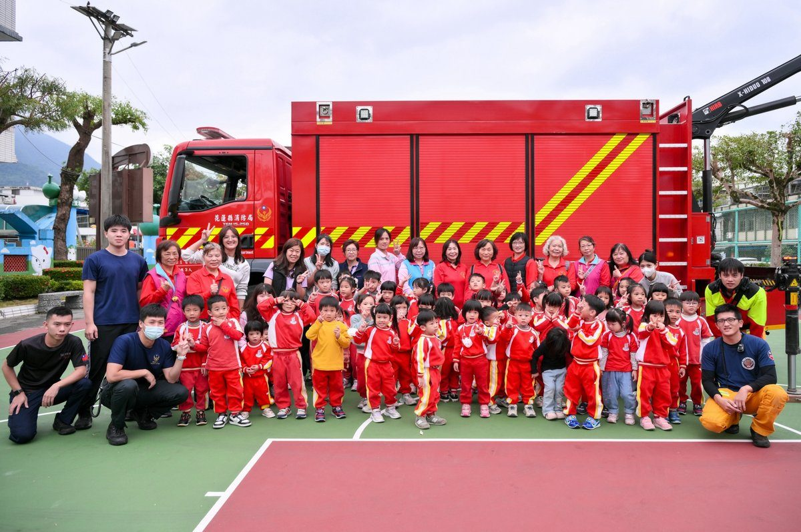

吉安幼兒園消防演練 百位幼兒體驗滅火煙霧逃生

可樂電子報小編/編輯
吉安鄉立幼兒園今（20）日於校園辦理「場所消防防護演練」，結合吉安婦宣大隊及消防局吉安分隊，帶領100餘位幼兒透過情境短劇、防火宣導、煙霧體驗及實際滅火操作，學習正確防火觀念與火災應變技巧，讓消防安全教育從小扎根。

活動首先由幼兒帶來結合舞蹈、體操與童謠的活力唱跳，炒熱現場氣氛；接著透過菸蒂引發火災的情境短劇，演示發現火災時的正確應變方式。吉安婦宣大隊也以生動講解及互動問答，提醒孩子發現火災時應立即告知家中長輩，並撥打119求助，孩子們踴躍舉手回應，現場互動熱絡。

隨後，幼兒分成四隊，輪流體驗煙霧逃生、射水演練、滅火器操作及消防器材介紹。在消防人員指導下，孩子們學習以低姿勢前進、扶牆及掩住口鼻等逃生技巧，也親自操作消防瞄子體驗射水，並運用「拉、瞄、壓、掃」口訣操作滅火器，親眼看見火焰熄滅，孩子們興奮地喊著：「換我、換我！」

此外，消防人員也展示破壞剪、水帶、空氣瓶、防護衣及救生裝備，並透過吊掛救援演練，讓孩子認識消防車輛及救災器材的功能，還有幼童在消防人員協助下穿上消防衣、體驗吊掛，留下深刻印象。本次活動共出動4輛消防車輛及14名人員，包括婦宣大隊7人、吉安分隊7人。

吉安消防分隊小隊長林建宏表示，希望透過多元體驗，讓幼童認識火災危害及基本應變方式，即使年紀尚小，也能在發現火災時立即通知家人及長輩，請大人協助通報消防隊並進行緊急處置。隊員蔡哲安也表示，透過實際操作及消防器材介紹，在寓教於樂的過程中認識消防器材的用途，學習正確的防火知識與應變觀念，進一步將防火安全意識融入日常生活。

園長林思吟指出，希望孩子將所學帶回家中，提醒家人注意用火安全，尤其因菸蒂引發火災的短劇，讓幼童瞭解並提醒家中長輩吸菸後應確實熄滅菸蒂，降低火災風險。
鄉長游淑貞表示，防災教育應從小扎根，透過寓教於樂的消防體驗，不僅讓幼兒建立正確防火知識，更能將安全觀念延伸至家庭，帶動家人共同重視居家防火安全。未來也將持續推動相關防災宣導，從學校到家庭攜手合作，打造安全、健康、無憂的樂活家園。
📸 更多現場紀實影像


▶ 延伸觀看
📺 相關報導影片：點此於 YouTube 觀看完整報導
🌟 掌握花蓮在地第一手資訊・歡迎訂閱追蹤
深度紀實報導、在地精采影音專題，第一時間接收最新消息！